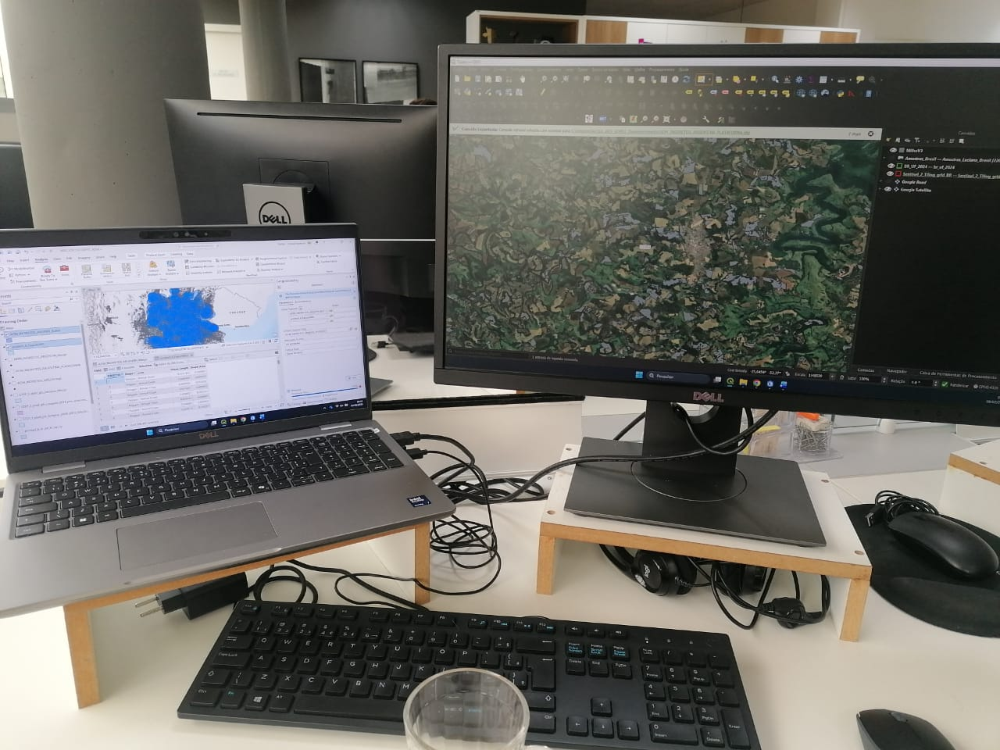
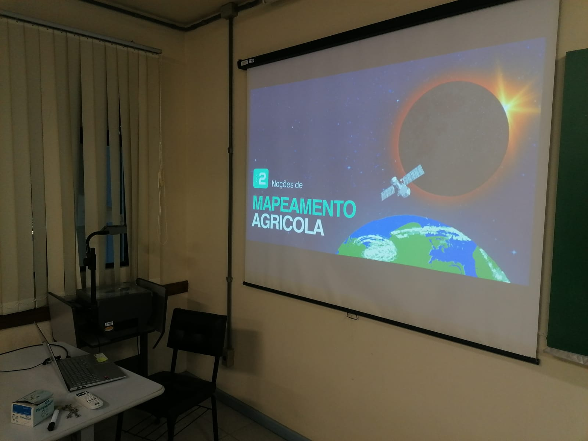
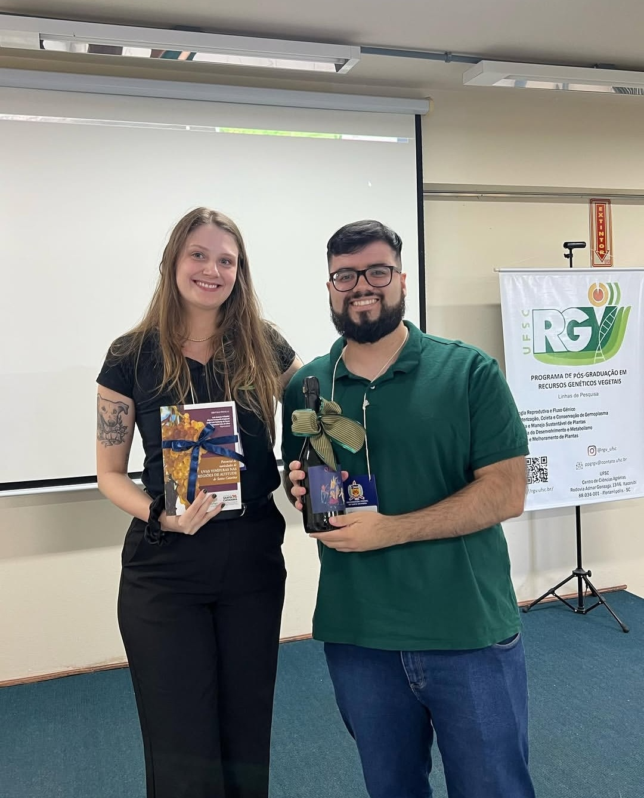
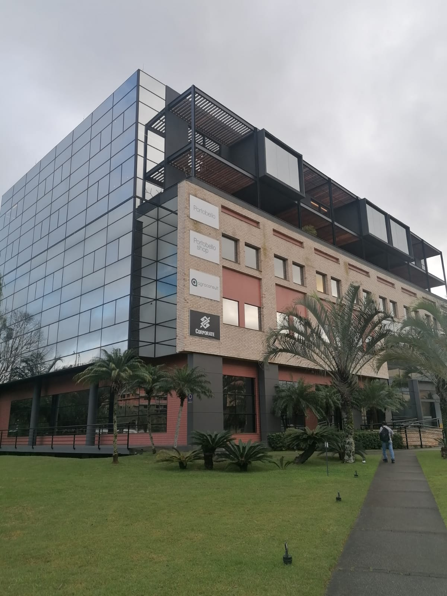

Hi, I'm Luciano
Agrônomo e desenvolvedor com foco em sensoriamento remoto agrícola e agricultura de precisão. Trabalho com R, Python e Google Earth Engine para transformar dados espaciais em decisões de field.

Hoje em dia é doido pensar que uso o ArcGIS como se fosse o QGIS.
No lado Open Source, criei o RTH Project — plugin publicado no repositório oficial do QGIS que auxilia no download de imagens Sentinel-2, Landsat, CBERS e outros satélites no CRS correto da região. Também dou palestras e workshops sobre Sensoriamento Remoto e Mapeamento Agrícola.

Workshops sobre Sensoriamento Remoto e Mapeamento Agrícola.

Apresentação no 3º Encontro Científico de Recursos Genéticos Vegetais.
Tenho experiência na Serasa Experian, referência nacional em mapeamento de culturas agrícolas via satélite com a equipe de Maps generation, e na Agroconsult, líder em inteligência de mercado no agronegócio brasileiro. Veja minha trajetória no LinkedIn e os projetos no GitHub.
Serasa Experian, Blumenau.

Agroconsult, Florianópolis.